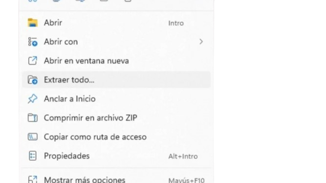
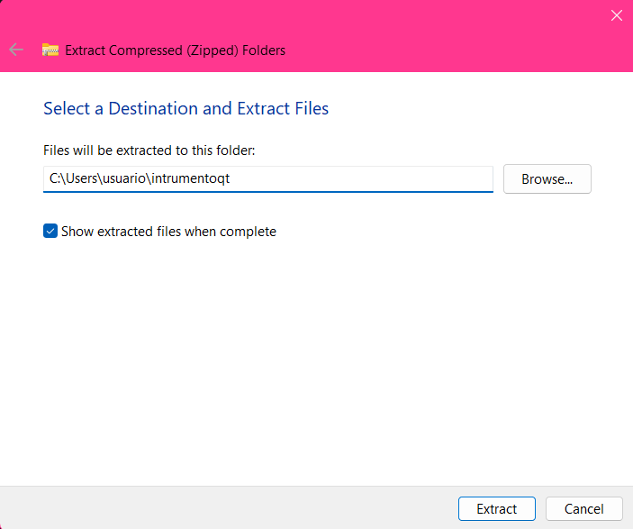
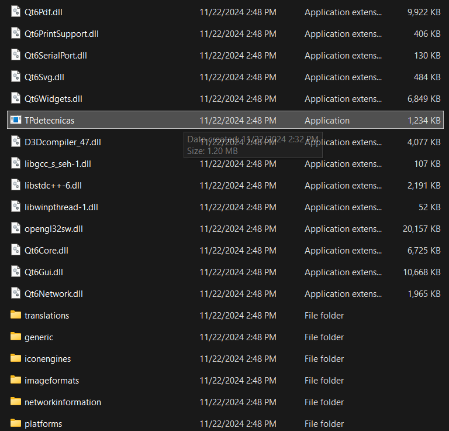
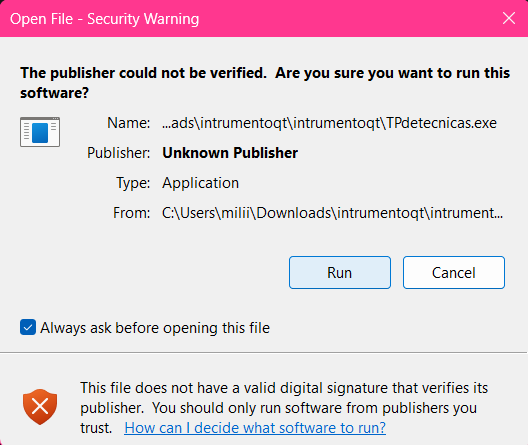

Instrucciones para usar el Instrumento Virtual XYZ
Paso 1: Descargar el software
Descarga software necesario para usar el instrumento virtual. El mismo es un archivo en formato ".zip"
DESCARGARPaso 2: Extraer .zip
Hacer click derecho sobre el documento "instrumentoqt.zip" y seleccionar la opción "Extraer todo...".
Paso 3: Seleccionar ubicación del archivo
Elegir en el buscador la ubicación en la PC más conveniente para guardar el archivo descomprimido.
Paso 4: Aplicación
Buscar en la carpeta descomprimida el archivo "TPdetecnicas" y clickear 2 veces sobre el.
Paso 5: Ejecutar aplicación
Seleccionar la opción "RUN" para ejecutar la aplicación correctamente.
